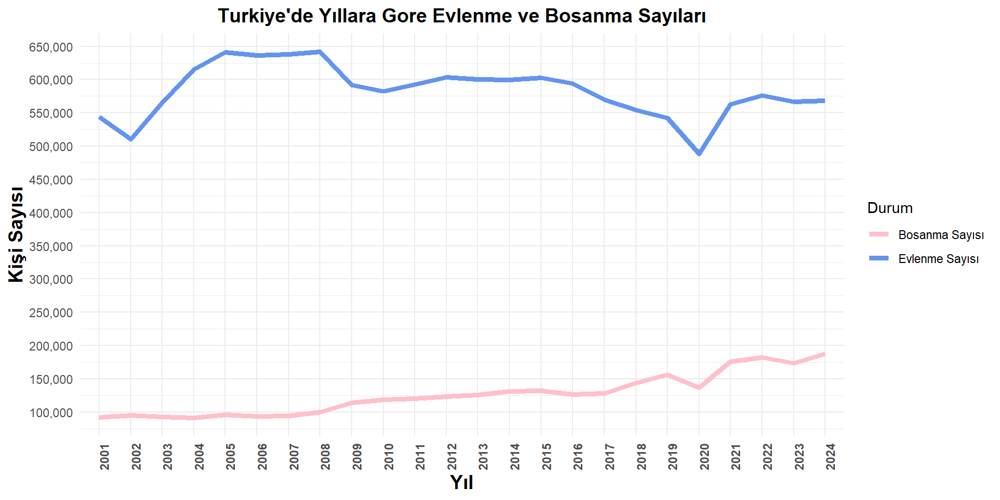
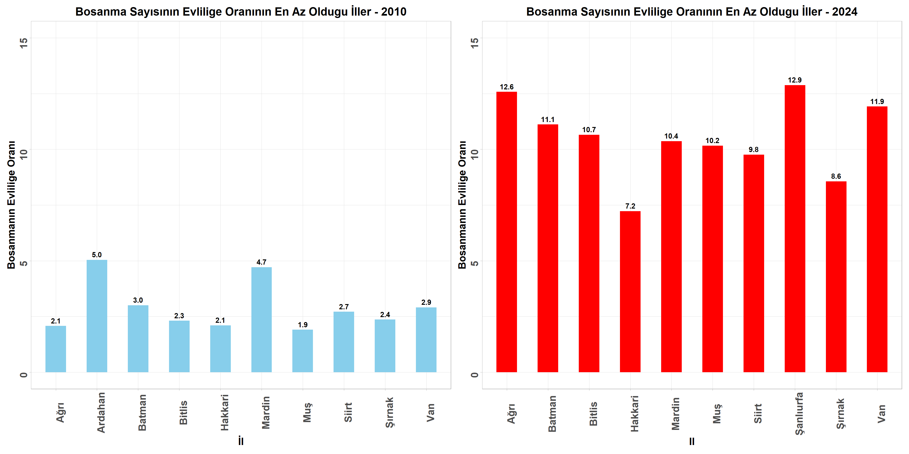
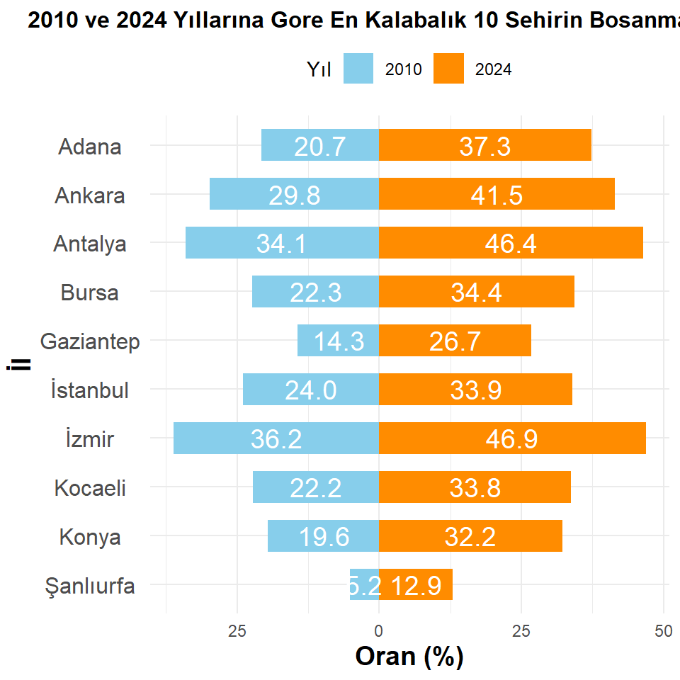
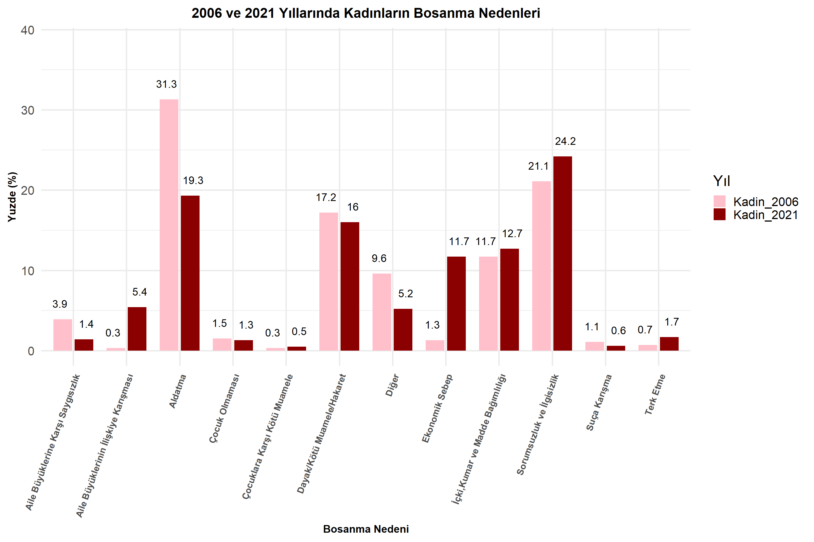
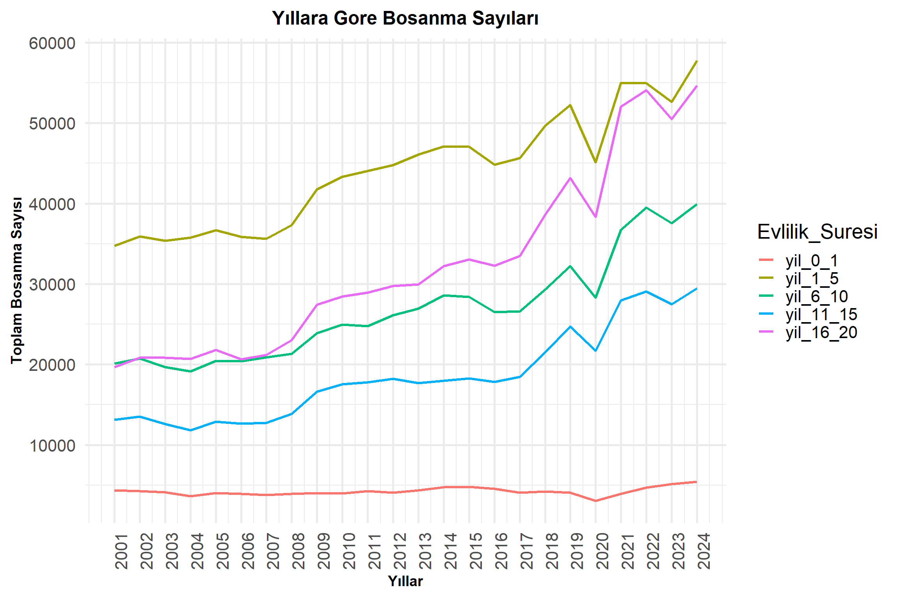
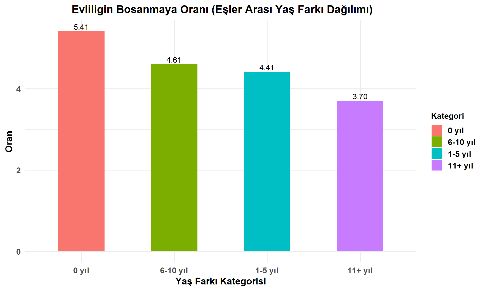

Boşanma oranları, toplumun demografik ve sosyoekonomik yapısındaki değişimleri yansıtan önemli göstergelerden biridir. Zaman içinde evlilik ve aile yapılarında yaşanan dönüşümler, boşanma istatistiklerine de yansımaktadır. Bu projede, Türkiye’de ve dünyada boşanma verileri görselleştirilerek incelenmekte; yıllara, bölgelere, cinsiyete ve boşanma değerlerine göre nasıl farklılık gösterdiği analiz edilmektedir. Amaç, boşanma olgusunu yalnızca sayısal bir veri olarak değil, toplumsal eğilimlerin bir yansıması olarak ele almak ve bu eğilimleri daha anlaşılır hale getirmektir.
Veri Hakkında Genel Bilgiler
Proje kapsamında analiz edilen veriler, Türkiye İstatistik Kurumu (TÜİK) tarafından yayımlanan evlenme ve boşanma istatistiklerinden oluşmaktadır. Veriler yıllık bazda derlenmiş olup 2001–2023 yılları arasındaki dönemi kapsamaktadır. Veri setinde yıllara göre boşanma sayıları, illere göre dağılım, cinsiyet, yaş grubu, evliliğin süresi gibi değişkenler bulunmaktadır. Veriler excel formatında elde edilmiş olup istatistiksel analiz ile görselleştirme işlemleri için temizlenmiş ve düzenlenmiştir. Bu çalışmada 9 adet veri seti kulllanılmış olup ve bu veri setlerinde bazı düzenleme işlemleri sonucunda ek olarak 3 adet alt veri seti oluşturulmuştur. Bu veri seti görselleştirilerek 16 adet grafik elde edilip, yorumlanarak çıkarımlar da bulunulmuştur.
Veri Kaynağı
Kullanılan veri setlerine aşağıdaki linklerden ulaşabilirsiniz.
Bu proje konusunun seçilmesinin başlıca nedenleri şunlardır:
Boşanma, aile yapısını ve toplumu etkileyen bir konu olması sebebiyle analiz edilmesi ve çıkarımlarda bulunulması açısından önemlidir.
Toplumda son yıllarda duyulan boşanma sayılarındaki artış konu ile ilgili merak uyandırdı.
Proje için veri seti araştırması yapılırken Türkiye İstatistik Kurumu (TÜİK)’te bu konuda çok fazla veri olması bizlere kapsamlı bir araştırma yapılabileceği düşüncesini getirdi ve bizi heyecanlandırdı.
Proje konumuzun sosyoloji, psikoloji, coğrafya, ekonomi, hukuk gibi çok farklı alanlar ile iç içe olması veri setimizi seçilmesinde etkili olmuştur.
Dikkat çekilmesi gereken bir konu olduğunu düşündüğümüz için ilerleyen akademik çalışmalarda da kullanılabileceği düşünülmektedir.
Cinsiyet, yaş, medeni durum, meslek grubu farketmeksizin her kitleye hitap edebilecek ve ilgi çekici bir konu olduğu düşünülmektedir.
Ön İşleme
Projemizde veri setlerimizde gerçekleştirdiğimiz ön işleme adımları aşağıdaki gibidir : Veri setlerinin yapısını anlamak ve gereken ön işleme adımlarını tespit etmekiçin veri seti, değişkenler ve değerler incelendi.
Veri setlerindeki anlamsız, yanlış ve aykırı değerler temizlendi. Grafik ve yorumlama için anlam ifade etmeyen sütunlar kaldırıldı.
Sütun ve satılarda bazı adlandırmalar ve karakterler düzeltildi.
Gerekli matematiksel işlemler gerçekleştirilerek veri istenilen hale getirildi. (ortalama, oran,toplam vb.)
Eksik ve aykırı veriler belirlendi. Eksik verileri doldurmak için uygun tahmin yöntemleri kullanılarak veri setleri düzenlendi. Bazı eksik veri doldurma işlemlerinde ise ortalama kullanıldı. Aykırı veriler için de bazen eksik verilere uygulanan yöntemler gerçekleştirilirken bazen analiz dışı bırakıldı.
Kategorik değişkenler sayısal değerlere dönüştürüldü. Veri görselleştirme yapılabilmesi için verilere bazı matematiksel işlemler uygulandı daha sonrasında veriler data frame formatına dönüştürülerek bir araya getirildi. Ardından görselleştirme ve analiz adımları gerçekleştirildi.
Analiz Edilen Grafikler
Yıllara Göre Boşanma Sayısı Ve Kaba Boşanma Hızı Grafiği
Boşanma konusunda ilk olarak yıllara göre boşanma sayısı verisi ele alındı. Bu veri setinde inceleme yapılırken boşanma sayısılarında nüfus artış etkisini de gözlemleyebilmek adına kaba boşanma hızı incelemeye dahil edildi. Kaba boşanma hızı, bir yıl içinde evlenebilecek yaştaki her 1000 nüfus başına düşen boşanma sayısıdır.
Code
# Excel dosyasını okuevlilik_bosanma_hiz <-read_excel("veri/evlilik-bosanma-nufus.xls")# Kaba bosanma hızı hesaplamasıevlilik_bosanma_hiz <- evlilik_bosanma_hiz %>%mutate(Yil =as.numeric(Yil),Kaba_Bosanma_Hizi = (Bosanma_Sayisi / Nufus_Sayisi) *1000 )# Çizgi verisi hazırlığıhizlar <- evlilik_bosanma_hiz %>%select(Yil, Kaba_Bosanma_Hizi) %>%pivot_longer(cols = Kaba_Bosanma_Hizi, names_to ="Kaba_Bosanma_Hizi", values_to ="Deger") %>%mutate(Kaba_Bosanma_Hizi ="Kaba bosanma hızı",Etiket =paste0(format(round(Deger, 2), nsmall =2), " "),Y_Pos = Deger *80000 )# Barplot çizimihizlar$Kategori <-"Kaba bosanma hızı"ggplot() +geom_bar(data = evlilik_bosanma_hiz,aes(x = Yil, y = Bosanma_Sayisi, fill ="Bosanma Sayısı"),stat ="identity") +geom_text(data = evlilik_bosanma_hiz,aes(x = Yil, y = Bosanma_Sayisi,label =format(Bosanma_Sayisi)),angle =90, vjust =0.5, hjust =3,color ="black", size =5) +geom_line(data = hizlar,aes(x = Yil, y = Y_Pos, color = Kategori, group =1),linewidth =1.2) +geom_point(data = hizlar,aes(x = Yil, y = Y_Pos),size =2.5,color ="purple") +geom_text(data = hizlar,aes(x = Yil, y = Y_Pos, label = Etiket),vjust =-1.5, size =4,color="purple" ) +scale_fill_manual(values =c("Bosanma Sayısı"="pink"), name =NULL) +scale_color_manual(values =c("Kaba bosanma hızı"="purple"), name =NULL) +scale_y_continuous(name ="Bosanma Sayısı",sec.axis =sec_axis(~./80000, name ="Kaba hız (Binde)") ) +scale_x_continuous(breaks = evlilik_bosanma_hiz$Yil) +labs(title ="Yıllara Gore Bosanma Sayısı ve Kaba Bosanma Hızının Karsılastırılması",x ="Yıl" ) +theme_minimal(base_size =20) +theme(axis.text.x =element_text(angle =90, vjust =0.5, hjust =1,size =12, face ="bold"),axis.title.x =element_text(color ="black", size =14, face ="bold"),axis.title.y =element_text(color ="black", size =14, face ="bold"),axis.title.y.right =element_text(color ="black", size =14, face ="bold"),plot.title =element_text(hjust =0.5, size =18, face ="bold"),legend.title =element_text(face ="bold"),legend.position ="bottom" )
Bu grafik, 2007 ile 2024 yılları arasındaki boşanma sayısı ve kaba boşanma hızının ilişkisini göstermektedir. Boşanma sayısı pembe sütunlarla, kaba boşanma hızı ise mor noktalarla ifade edilmiştir.
Yıllar içerisinde boşanma sayısında düzensiz bir artış trendi gözlemlenmektedir. Kaba boşanma hızı yıllar içinde artış göstermiştir. Kaba boşanma hızındaki artış, boşanma sayısındaki artış ile paralellik göstermektedir. Kaba boşanma hızındaki artış, boşanma oranların artmaya devam ettiğini ve toplumsal normların değişmesiyle boşanmanın daha yaygın hale geldiği düşünülebilir.
2020 yılındaki kritik düşüş pandemi sürecinde ülkemizde yaşanan kapanma, resmi süreçlerin aksaması, mahkemelerin ve davaların gerçekleştirilememesi gibi sebeplerden kaynaklı gerçekleşmiş olabilir.
2021 yılındaki kritik artış; pandemi sebebiyle 2020 yılında gerçekleştirilemeyen ve 2021 yılına devredilen davalar sebep olmuş olabilir. Bir diğer sebep ise pandemi sürecindeki aile içi ilişkilerde yaşanan zorluklar neticesinde daha fazla boşanma kararının alınması olabilir.
Boşanma verileri incelendiğinde, ani artış veya azalışların ülkemizde yaşanan ekonomik kriz, OHAL, deprem felaketi gibi olağanüstü olayların etkili olduğu düşünülmektedir. (2008-2009: Ekonomik Kriz, 2016 : OHAL, 2023 : Deprem Felaketi )
Yıllara Göre Evlenme Sayısı Ve Kaba Evlenme Hızı Grafiği
Yıllar içerisinde boşanma sayısındaki değişimin gözlemlenmesinin ardından evlilik sayısı ve kaba evlenme hızındaki değişim merak konusu olmuştur. Kaba evlenme hızı, bir yıl için¬de evlenebilecek yaştaki her 1000 nüfus başına düşen evlenme sayısıdır.
Code
#Kaba evlenme hızı hesaplaevlilik_bosanma_hiz <-read_excel("veri/evlilik-bosanma-nufus.xls")evlilik_bosanma_hiz <- evlilik_bosanma_hiz %>%mutate(Yil =as.numeric(Yil),Kaba_Evlenme_Hizi = (Evlenme_Sayisi / Nufus_Sayisi) *1000 )hizlar <- evlilik_bosanma_hiz %>%select(Yil, Kaba_Evlenme_Hizi) %>%pivot_longer(cols = Kaba_Evlenme_Hizi,names_to ="Kaba_Evlenme_Hizi",values_to ="Deger" ) %>%mutate(Kaba_Evlenme_Hizi ="Kaba evlenme hızı", # Legend için sabit isimEtiket =paste0(format(round(Deger, 2), nsmall =2), " "),Y_Pos = Deger *80000,Kategori ="Kaba evlenme hızı" )ggplot() +geom_bar(data = evlilik_bosanma_hiz,aes(x = Yil, y = Evlenme_Sayisi, fill ="Evlenme Sayısı"),stat ="identity" ) +geom_text(data = evlilik_bosanma_hiz,aes(x = Yil, y = Evlenme_Sayisi, label =format(Evlenme_Sayisi)),angle =90, vjust =0.5, hjust =3,color ="white", size =5 ) +geom_line(data = hizlar,aes(x = Yil, y = Y_Pos, color = Kaba_Evlenme_Hizi, group =1),linewidth =1.2 ) +geom_point(data = hizlar,aes(x = Yil, y = Y_Pos, color = Kaba_Evlenme_Hizi),size =4 ) +geom_text(data = hizlar,aes(x = Yil, y = Y_Pos, label = Etiket),color ="darkred",vjust =-1, size =4,show.legend =FALSE ) +scale_fill_manual(values =c("Evlenme Sayısı"="cornflowerblue"), name =NULL) +scale_color_manual(values =c("Kaba evlenme hızı"="darkred"), name =NULL) +scale_y_continuous(name ="Evlenme sayısı",sec.axis =sec_axis(~./80000, name ="Kaba hız (Binde)") ) +scale_x_continuous(breaks = evlilik_bosanma_hiz$Yil) +labs(title ="Yıllara Gore Evlenme Sayısı ve Kaba Evlenme Hızı",x ="Yıl" ) +theme_minimal(base_size =20) +theme(axis.text.x =element_text(angle =90, vjust =0.5, hjust =1,size =12, face ="bold"),axis.title.y =element_text(color ="black", size =14, face ="bold"),axis.title.x =element_text(color ="black", size =14, face ="bold"),axis.title.y.right =element_text(color ="black", size =14, face ="bold"),plot.title =element_text(hjust =0.5, size =18, face ="bold"),legend.title =element_text(face ="bold",size=6),legend.position ="bottom" )
Bu grafik, 2007 ile 2024 yılları arasında Türkiye’deki evlenme sayısı ve kaba evlenme hızının ilişkisini göstermektedir. Mavi barlar evlenme sayısını, kırmızı noktalar ise kaba evlenme hızını (binde) göstermektedir.
Grafik incelendiğinde evlilik sayısında durağanlık gözlemlenirken kaba evlilik hızında ise yıllar içinde belirgin bir düşüş gözlemlenmektedir. Kaba evlenme hızındaki bu düşüş, önceki yıllarda daha fazla kişinin evlendiği ve evlenme oranının daha yüksekken son yıllarda evlenme oranlarının düştüğünü göstermektedir. Evlenme oranlarındaki azalma, toplumsal normların, kültürel değişimlerin ve ekonomik faktörlerin evlilik üzerinde etkili olduğu düşünülmektedir.
Boşanma sayısında olduğu gibi evlilik sayısında da 2020 yılında büyük bir düşüş yaşanmıştır. Bu yılda yaşanan pandemi ile toplumsal kısıtlamalar ve yaşam düzenindeki büyük değişiklikler evlenme sayılarını olumsuz etkilemiş olabilir. 2021 yılındaki artış pandemi sonrası normalleşme süreciyle birlikte evlenme oranlarının tekrar yükseldiğini gösteriyor olabilir.
Yıllara Göre Evlenme Ve Boşanma Sayısı (Türkiye Geneli)
Boşanma ve evlilik verileri incelenirken en çok merak edilen konulardan biri de aynı yıl içerisinde evlenme-boşanma sayılarının nasıl değişiklik gösterdiğidir.
Code
turkiye_geneli <-read_excel("veri/turkiye_geneli.xlsx")Durum <-c("evlenme_sayisi","bosanma_sayisi")grafik <- turkiye_geneli |>ggplot() +geom_line(aes(x = yil, y = evlenme_sayisi, color ="Evlenme Sayısı",group=1), linewidth =1.7) +geom_line(aes(x = yil, y = bosanma_sayisi, color ="Bosanma Sayısı",group=1), linewidth =1.7) +scale_color_manual(values =c("Evlenme Sayısı"="cornflowerblue", "Bosanma Sayısı"="pink")) +scale_y_continuous(breaks =seq(0, 700000, by =50000), labels = comma) +labs(title ="Turkiye'de Yıllara Gore Evlenme ve Bosanma Sayıları",x ="Yıl",y ="Kişi Sayısı",color ="Durum") +theme_minimal()+theme(axis.text.x =element_text(angle =90, vjust =1, face ="bold"))+theme(axis.title =element_text(hjust =0.5, size =14,face ="bold"),plot.title=element_text(hjust =0.5, size =14,face="bold"))grafik

Bu grafik, Türkiye’deki evlenme ve boşanma sayılarını yıllara göre karşılaştırmaktadır. Kırımızı renk yıllara göre boşanma sayısını, mavi renk ise yıllara göre evlenme sayısını temsil etmektedir.
Evlenme sayıları yıllar içerisinde azalış trendi gösterirken boşanma sayıları artış içerisindedir bu durum evlenme ve boşanma sayıları arasında doğrusal bir ilişki olmadığını göstermektedir.
2022 Yılına Göre Evlenme Ve Boşanma Sayısı (Dünya Geneli)
Türkiye boşanma verilerinin incelenmesinin ardından kaba boşanma hız değeri Dünya ülkeleriyle karşılaştırılmıştır. Bu karşılaştırma yapılırken Türkiyedeki kaba boşanma hızının yüksek olduğu 2022 yılı seçilmiştir. Karşılaştırmaya dahil edilen ülkeler farklı kıtalardan seçilmiştir.
Grafikte 2022 yılına ait çeşitli ülkelerdeki boşanma kaba hızı gösterilmektedir. Grafiği incelediğimizde :
Ülkeler arasında kültürel, ekonomik ve sosyal farklılıkları olmasına rağmen ülkelerin bir çoğunun yakın kaba boşanma hızına sahip olduğu gözlemlenmiştir. Bazı ülkelerde dini ve kültürel sebepler ön plana çıkarken bazı ülkelerde ekonomik sebeplerin ön plana çıkmış olması sonucunda bu ülkelerde yakın oranlar ortaya çıkmış olabilir.
Türkiye açısından değerlendirdiğimizde son yıllardaki kaba boşanma hızının artışına rağmen diğer ülkelerle kıyaslandığında hala ortalama bir seviyede olduğu gözlemlenmektedir.
Sonuç olarak her ülkenin ve kıtanın kendi toplumsal yapısına, ekonomik koşullarına ve kültürel normlarına göre kaba boşanma hızları farklılık gösterebilir. Bu sebeple daha güçlü çıkarımlar için daha detaylı veriler incelenmelidir.
2010 Ve 2024 Yıllarına Göre Boşanma Sayısı/Evlenme Sayısı (En Az 10 İl)
Boşanma verileri çalışmasında Türkiye’de illerin evlilik veya boşanma eğilimlerini analiz edebilmek için boşanma sayısının evlilik sayısına oranı hesaplandı. 2010 ve 2024 yıllarında bu oranın en az olduğu 10 il incelenmiştir.
Code
#2010 yılındaki Nufüsa Göre Boşanma oranının en az olduğu 10 Şehrin Gösterimi#Evlenme_bosanma_orani_2010_azEvlenme_bosanma_orani_2010_az <-read_excel("veri/Evlenme_bosanma_orani_2010_az.xlsx")p1<-Evlenme_bosanma_orani_2010_az|>ggplot(aes(x=Il, y=Oran)) +geom_bar(stat ="identity", fill ="skyblue",width =0.5)+labs(title ="Bosanma Sayısının Evlilige Oranının En Az Oldugu İller - 2010",x ="İl",y ="Bosanmanın Evlilige Oranı")+theme_light()+theme(plot.title =element_text(hjust =0.5, size =12, face ="bold"))+geom_text(aes(label =sprintf("%.1f", Oran)), vjust =-0.5,size =4,fontface ="bold")+ylim(0, 15)#2024 yılındaki Nufüsa Göre Boşanma oranının en az olduğu 10 Şehrin GösterimiEvlenme_bosanma_orani_2024_az <-read_excel("veri/Evlenme_bosanma_orani_2024_az.xlsx")p2<-Evlenme_bosanma_orani_2024_az|>ggplot(aes(x=Il, y=Oran)) +geom_bar(stat ="identity", fill ="red",width =0.5)+labs(title ="Bosanma Sayısının Evlilige Oranının En Az Oldugu İller - 2024",x ="Il",y ="Bosanmanın Evlilige Oranı")+theme_light()+theme(plot.title =element_text(hjust =0.5, size =14, face ="bold"))+geom_text(aes(label =sprintf("%.1f", Oran)), vjust =-0.5,size =4,fontface ="bold")+ylim(0, 15)(p1|p2)

Grafik incelendiğinde; boşanma sayısının evlilik sayısına oranlarının genel olarak arttığı gözlemlenmektedir.
Önceki veriler de incelendiğinde oranlarındaki artışın sebebinin illerin evlenme sayılarının durağan seyrederken, boşanma sayılarındaki artıştan dolayı olduğu görülmektedir.
Grafikte yer alan çoğu şehrin Doğu Anadolu ve Güney Doğu Anadolu bölgesinde yer aldığı gözlemlenmiştir.
2010 ve 2024 yılları arasında geçen 14 yıllık sürece rağmen iki grafiğinde aynı bölgelerdeki şehirlerden oluştuğunun gözlemlenmesi bu bölgelerin kültürel yapılarından ve toplum normlarından kaynaklı olduğu düşünülmektedir.
2010 Ve 2024 Yıllarına Göre Boşanma Sayısı/Evlenme Sayısı (En Fazla 10 İl)
Code
#2010 yılındaki Nufüsa Göre Boşanma oranının en çok olduğu 10 Şehrin GösterimiEvlenme_bosanma_orani_2010_cok <-read_excel("veri/Evlenme_bosanma_orani_2010_cok.xlsx")p3<-Evlenme_bosanma_orani_2010_cok|>ggplot(aes(x=Il, y=Oran)) +geom_bar(stat ="identity", fill ="skyblue",width =0.5)+labs(title ="Bosanma Sayısının Evlilige Oranının En Cok Oldugu İller - 2010",x ="İl",y ="Bosanmanın Evlilige Oranı")+theme_light()+theme(plot.title =element_text(hjust =0.5, size =12, face ="bold"))+geom_text(aes(label =sprintf("%.1f", Oran)), vjust =-0.5,size =4,fontface ="bold")+ylim(0, 70)#2024 yılındaki Nufüsa Göre Boşanma oranının en çok olduğu 10 Şehrin GösterimiEvlenme_bosanma_orani_2024_cok <-read_excel("veri/Evlenme_bosanma_orani_2024_cok.xlsx")p4<-Evlenme_bosanma_orani_2024_cok|>ggplot(aes(x=Il, y=Oran)) +geom_bar(stat ="identity", fill ="red",width =0.5)+labs(title ="Bosanma Sayısının Evlilige Oranının En Cok Oldugu İller - 2024",x ="İl",y ="Bosanmanın Evlilige Oranı")+theme_light()+theme(plot.title =element_text(hjust =0.5, size =14, face ="bold"))+geom_text(aes(label =sprintf("%.1f", Oran)), vjust =-0.5,size =4,fontface ="bold" )+ylim(0, 70)ortak_tema <-theme(plot.title =element_text(size =18),axis.text =element_text(size =16,angle =90,face ="bold"),axis.title =element_text(size =16,face ="bold"))p1 <- p1 + ortak_temap2 <- p2 + ortak_temap3 <- p3 + ortak_temap4 <- p4 + ortak_tema(p3|p4)
Bu veri incelendikten sonra bir de evlilik sayının boşanma saysına oranının en yüksek olduğu 10 il incelenmiştir.
Grafik incelendiğinde yine boşanma sayısının evlilik sayısına oranlarının genel olarak arttığı gözlemlenmektedir. Genel olarak artmasına rağmen diğer grafikte olduğu kadar büyük bir artış gözlemlenmemiştir.
İncelenen 2 yılda da en fazla evlilik boşanma oranının çoğunlukla Batı illeri ve büyükşehirlerden oluştuğu görülmektedir.
Veri detaylı incelendiğinde Tunceli ilindeki oran artışı dikkat çekmektedir.Sebebi incelendiğinde Tunceli ilindeki toplam nüfusun düşük olması sebebiyle artan veya azalan her değerin büyükşehirlere kıyasla daha büyük bir etkisi olduğu tespit edilmiştir.
2010 ve 2024 Yıllarına Göre Boşanma Sayısı/Evlenme Sayısı (En Büyük 10 İl)
Türkiye’nin en kalabalık 10 şehirinin 2010 ve 2024 yılları boşanma verileri incelenerek boşanma oranlarındaki değişim, zaman içindeki eğilimler ve büyük şehirlerdeki davranış gözlemlenmek istenmiştir.
Code
#En büyük 10 şehir kıyaslama piramidIik_10_Sehir_Bosanma <-read_excel("veri/Iik_10_Sehir_Bosanma.xlsx")# Uzun form ve piramit formatıveri_long <- Iik_10_Sehir_Bosanma %>%pivot_longer(cols =starts_with("Oran"), names_to ="Yil", values_to ="Oran") %>%mutate(Yil =str_replace(Yil, "Oran_", ""),Oran =ifelse(Yil =="2010", -Oran, Oran), # 2010 sola, 2024 sağaIl =factor(Il, levels =rev(unique(Il))) # İl sıralaması yukarıdan aşağı )ggplot(veri_long, aes(x = Il, y = Oran, fill = Yil)) +geom_bar(stat ="identity",width =0.65) +geom_text(aes(label =sprintf("%.1f", abs(Oran))),position =position_stack(vjust =0.5),size =5,color ="white")+coord_flip() +scale_y_continuous(labels = abs) +scale_fill_manual(values =c("2010"="skyblue", "2024"="darkorange")) +labs(title ="2010 ve 2024 Yıllarına Gore En Kalabalık 10 Sehirin Bosanma Oranları ",x ="İl",y ="Oran (%)",fill ="Yıl" ) +theme_minimal() +theme(plot.title =element_text(hjust =0.5, face ="bold",size=14),axis.text.y =element_text(hjust =0.5,size =12), axis.title.y =element_text(hjust =0.5,size =14,face="bold"), axis.title.x =element_text(hjust =0.5,size =14,face="bold"), legend.position ="top" )

Grafikte, Türkiyenin en çok nufüsa sahip 10 ilinin 2010-2024 yıllarındaki boşanma oranları gösterilmektedir. 2010 yılı mavi renk çubuklarla, 2024 yılı turuncu renk çubuklarla gösterilmektedir.
Grafik incelendiğinde 2024 yılında 2010 yılına göre daha fazla oranda boşanma yaşandığı görülmektedir. En dikkat çekici artış Şanlıurfa ilinde görülmektedir. (Yaklaşık 2.5 kat)
2006-2021 Yılındaki Boşanma Nedenleri (Kadın-Erkek)
Türkiyede yıllar içerisindeki boşanma sayılarındaki artışlar doğrultusunda kadın ve erkek boşanma nedenleri merak konusu olmuştur. Bu konuda 2006 ve 2021 yıllarında kadın ve erkeklerinboşanma nedenleri incelenerek hem cinsiyet hem de yıl faktörleri analiz edilmiştir.
Code
veri <-read_excel("veri/Bosanma_sebepleri_2006_2021.xlsx")veri_long <- veri %>%pivot_longer(cols =-Bosanma_Nedeni, names_to ="Grup", values_to ="Yuzde") %>%mutate(Yuzde =as.numeric(gsub(",", ".", Yuzde))) %>%filter(Grup %in%c("Kadin_2006", "Kadin_2021"))ggplot(veri_long, aes(x = Bosanma_Nedeni, y = Yuzde, fill = Grup)) +geom_bar(stat ="identity", position =position_dodge(width =0.8), width =0.7) +geom_text(aes(label =round(Yuzde, 1)), position =position_dodge(width =1), vjust =-1.5, size =5) +labs(title ="2006 ve 2021 Yıllarında Kadınların Bosanma Nedenleri",x ="Bosanma Nedeni",y ="Yuzde (%)",fill ="Yıl" ) +theme_minimal(base_size =20) +theme(plot.title =element_text(hjust =0.5, face ="bold", size =18),axis.title.x =element_text(face ="bold", size =14),axis.title.y =element_text(face ="bold", size =14),axis.text.x =element_text(angle =70, hjust =1, size =12,face ="bold") )+scale_fill_manual(values =c("Kadin_2006"="pink", "Kadin_2021"="dark red")) +coord_cartesian(ylim =c(0, max(veri_long$Yuzde) +7))

Code
## erkek 2006-2021 bosanma nedenleriveri_long <- veri %>%pivot_longer(cols =-Bosanma_Nedeni, names_to ="Grup", values_to ="Yuzde") %>%mutate(Yuzde =as.numeric(gsub(",", ".", Yuzde))) %>%filter(Grup %in%c("Erkek_2006", "Erkek_2021"))ggplot(veri_long, aes(x = Bosanma_Nedeni, y = Yuzde, fill = Grup)) +geom_bar(stat ="identity", position =position_dodge(width =0.8), width =0.7) +geom_text(aes(label =round(Yuzde, 1)), position =position_dodge(width =1), vjust =-1.5, size =5) +labs(title ="2006 ve 2021 Yıllarında Erkeklerin Bosanma Nedenleri",x ="Bosanma Nedeni",y ="Yuzde (%)",fill ="Yıl" ) +theme_minimal(base_size =20) +theme(plot.title =element_text(hjust =0.5, face ="bold", size =18),axis.title.x =element_text(face ="bold", size =14),axis.title.y =element_text(face ="bold", size =14),axis.text.x =element_text(angle =70, hjust =1,face="bold",size=12) )+scale_fill_manual(values =c("Erkek_2006"="sky blue", "Erkek_2021"="dark blue")) +coord_cartesian(ylim =c(0, max(veri_long$Yuzde) +7))
2006 yılına bakıldığında aldatma, şiddet ve ilgisizlik sebepleri kadınlar için boşanma sebepleri arasında ön plana çıkmaktadır. Süreç içerisinde aldatma sebepli boşanma oranları azalmasına rağmen kadınlar için boşanma sebebi olarak önemini korumaktadır.
Grafikten, kadının sosyal rolü, ekonomik durumu ve hakları ile ilgili toplumsal değişimlerin boşanma sebeplerine doğrudan etkilediği çıkarımında bulunulabilir.
2006 yılına bakıldığında aldatma, aile büyüklerine saygısızlık ve ilgisizlik sebepleri erkekler için boşanma sebepleri arasında ön plana çıkmaktadır. Süreç içerisinde aldatma sebepli boşanma oranlarının azalmasına rağmen erkekler için boşanma sebebi olarak önemini korumaktadır.
Aldatma, ilgisizlik ve ekonomik sorunlar hem kadınlar hem de erkekler için boşanma nedenleri arasında ilk sıralarda yer alıyor. - Kadın ve erkekler arasında boşanma nedenlerinde bazı benzerlikler olsa da, kadınlar için ekonomik sebepler ve erkekler için sorumsuzluk ve ilgisizlik daha belirgin hale gelmiş.
Kadın ve erkeklerde sorumsuzluk ve ilgisizlik sebebi ise süreç içerisinde artarak 2021 yılında en önemli boşanma sebebi haline gelmiştir. Yeni teknolojik dünya düzeni, dijital bağımlılık, yoğun iş tempoları gibi durumlar aile yapısını bozarak ilgisizlik sebepli boşanmaların sebebi olarak değerlendirilebilir.
Kadın ve erkeklerde aile büyüklerinin ilişkiye karışması 2006 yılında önemli bir boşanma faktörü değilken 2021 yılında ciddi bir artış ile boşanma sebepleri arasında önemli bir yer tutmaktadır. Günümüzde bireylerin özgürlüklerine ve kendi alanlarına verdikleri önem sayesinde bu durum önemli bir boşanma sebebi olarak düşünülebilir.
Yıllar içerisinde değişim incelendiğinde kadın ve erkeklerde karşımıza çıkan bir diğer kritik nokta ise ekonomik sebepler ile gerçekleşen boşanma sayılarındaki artıştır. Süreç içerisinde yaşanan ekonomik krizler, alım gücünün düşmesi ve geçim sıkıntısı gibi faktörlerin aile birliğinin bozulmasında etkili olduğu görülmektedir.
2006 yılında kadınlar ve erkekler için boşanma sebepleri arasında öne çıkan aile büyüklerine karşı saygısızlık ve aldatma sebepleri 2021 yılında büyük bir düşüş gösterek boşanma sebepleri arasında daha az bir orana sahip olmuştur. Aile büyüklerine karşı saygısızlık sebebinde yaşanan düşüş aile bağlarının zayıflaması, aileye olan saygının artması, toplumda aile yapısının giderek küçülmesi gibi sebepler olabilir.
Kişi Başına Düşen Gelir Oranıyla Boşanma Kaba Hızının Karşılaştırılması
2021 yılı itibariyle kadın ve erkeklerde ön plana çıkan sebeplerden biri olan ekonomik sebepler için GSYH verileri kaba boşanma hız verileri ile kıyaslanmıştır.
Code
GSYH <-read_excel("veri/GSYH.xlsx")GSYH$Kategori <-"Kaba Bosanma Hızı"GSYH$Kategori2 <-"Kisi Basına GSYH"ggplot() +geom_bar(data = GSYH, aes(x = Yil, y = Kisi_Basi_GSYH, fill = Kategori2), stat ="identity") +geom_text(data = GSYH, aes(x = Yil, y = Kisi_Basi_GSYH, label =format(Kisi_Basi_GSYH, nsmall =2)),angle =90, vjust =0.5, hjust =1.5, color ="white", size =5) +geom_line(data = GSYH, aes(x = Yil, y = Kaba_Bosanma_Hizi *6000, color = Kategori), size =1.2) +geom_point(data = GSYH, aes(x = Yil, y = Kaba_Bosanma_Hizi *6000, color = Kategori), size =2.75) +geom_text(data = GSYH, aes(x = Yil, y = Kaba_Bosanma_Hizi *6000, label =round(Kaba_Bosanma_Hizi, 2), color = Kategori), vjust =-1, size =5, show.legend =FALSE) +scale_fill_manual(values =c("Kisi Basına GSYH"="#1b9e77"), name =NULL) +scale_color_manual(values =c("Kaba Bosanma Hızı"="#e6550d"), name =NULL)+scale_y_continuous(name ="Kisi Basına GSYH", sec.axis =sec_axis(~./6000, name ="Kaba hız (Binde)") ) +scale_x_continuous(breaks = GSYH$Yil) +labs(title ="Yillara Gore Kaba Bosanma Sayisi ve Kisi Basina GSYH Karsılastırılması",x ="Yıl" ) +theme_minimal(base_size =20) +theme(axis.text.x =element_text(angle =90, vjust =0.5, hjust =1,size=12,face ="bold"),axis.title.x =element_text(color ="black", size =14,face ="bold"),axis.title.y =element_text(color ="black", size =14,face ="bold"),axis.title.y.right =element_text(color ="black", size =14,face ="bold"),plot.title =element_text(hjust =0.5, size =18, face ="bold"),legend.position ="bottom" )
Warning: Using `size` aesthetic for lines was deprecated in ggplot2 3.4.0.
ℹ Please use `linewidth` instead.
Bu grafikte 2007-2023 yılları arasındaki kişi başına GSYH verisi yeşil bar ile kaba boşanma hızı verisi ise turuncu noktalarla gösterilmiştir.
GSYH verileri incelendiğinde süreç içerisinde yaşanan ekonomik kriz dönemlerinde düşüş (2009 ve 2020 yılları) gözlemlenmiştir. Bu düşüşler dışında 2010-2013 yılları ve 2020-2023 yılları arasında artış tespit edilmiştir. Genel olarak belirli bir artış veya azalış trendi görülmemektedir.
Kaba boşanma oranları ile kıyaslama yaptığımızda ise net bir ilişkiden bahsetmek mümkün değildir. Pandemi senesi olan 2020 yılındaki kritik değişimler dışında artış ve azalış trendleri birbiriyle tam anlamıyla uyumlu değildir. GSYH verilerinin ülke içerisindeki alım gücü ile uyumlu olmaması ve enflasyon verilerinin özellikle kaba boşanma hızının tavan yaptığı son senelerde yüksek olması da göz önünde bulundurularak GSYH verilerinin boşanma ile anlamlı bir ilişkisi olmadığı yorumu yapılabilir.
Resmi verilerde bulunan sebepler incelendi.
Peki toplum yapımızda evliliklerin bitmesiyle bağdaştırılan sebepler gerçekten verilerle destekleniyor mu?
Bu konuda toplumumuzda boşanma sebebi olarak görülen evlilik süreleri, eşler arası yaş farkları, boşanma yaşı verileri incelendi.
İlk olarak evlilik süresine göre boşanma sayısı verileri analiz edildi.
Evlilik Sürelerine Göre Boşanma Sayılarının Analizi
Code
# Evlilik süresine göre boşanma sayısı grafiğievlilik_suresi<-read_excel("veri/Evlilik_suresi_Turkiye_geneli.xlsx")yildan_az_1<-sum(evlilik_suresi[2])yil_1_5<-sum(evlilik_suresi[3:7])yil_6_10<-sum(evlilik_suresi[8:12])yil_11_15<-sum(evlilik_suresi[13:17])yil_16_20<-sum(evlilik_suresi[18:22])bosanma_sayisi <-data.frame(Evlilik_Suresi =c("0-1 yıldan az", "1-5 yıl", "6-10 yıl", "11-15 yıl", "16-20+ yıl"), total_bosanma_sayisi<-c(yildan_az_1,yil_1_5,yil_6_10,yil_11_15,yil_16_20))bosanma_sayisi$Evlilik_Suresi <-factor( bosanma_sayisi$Evlilik_Suresi,levels =c("0-1 yıldan az", "1-5 yıl", "6-10 yıl", "11-15 yıl", "16-20+ yıl"))bosanma_sayisi|>ggplot(aes(x=Evlilik_Suresi, y=total_bosanma_sayisi)) +geom_bar(stat ="identity", fill ="skyblue",width =0.5)+geom_text(aes(label = total_bosanma_sayisi), vjust =-0.5, size =4)+labs(title ="Evlilik Suresine Gore Bosanma Sayısı",x ="Evlilik Suresi",y ="Toplam Boşanma Sayısı")+theme_minimal()+theme(plot.title =element_text(hjust =0.5, size =14, face ="bold"),axis.title.x =element_text(color ="black", size =12,face ="bold"),axis.title.y =element_text(color ="black", size =12,face ="bold"),axis.text.x =element_text(angle =0, vjust =10, hjust =0.5,size=10,face ="bold"))
Grafikte evlilik süreleri 5 farklı döneme ayrılmıştır.
Evliliğin ilk yılında boşanma sayısının en düşük olmasının önemli sebeplerine; ilişkide ortaya çıkan sorunlarda sevgiden kaynaklı ilişkiye dair hala bir umudun olması, uyum süreci olarak nitelendirebileceğimiz bu süreçte çiftlerin birbirlerine daha özenli davranması ve boşanma kararının evlilik kararından daha zor olması gibi örnekler verilebilir. Bunun yanı sıra çiftler bu süreçte boşanma kararı alsa bile yasal süreçler sebebi ile boşanma sürecinin uzaması yine bu kategorideki verinin düşük kalmasında bir etmen olarak yorumlanabilir.
En fazla boşanma sayısının olduğu aralık 1-5 yıl olarak göz önüne çıkmıştır. Evliliğin ilk senelerinde oluşan sorunların bireyler arasında çözümünün daha zor olması, birbirlerine olan bağın yüksek seviyede olmaması sebebiyle evlilikten daha kolay vazgeçebilmeleri ve evliliğin * * ilk yılında boşanmaya karar vermiş ancak yasal süreç sebebi ile sürecin tamamlanmasının bu yıl aralığına sarkması gibi nedenlerle 1-5 yıl arası ön plana çıkmış olabilir.
Bu grafikte öne çıkan en çarpıcı veri ise toplumsal normların dışında 16-20+ yıllardaki değerlerin en yüksek ikinci boşanma sayısına sahip olmasıdır. Evlilik süresi arttıkça insanların birbirine bağımlılıkları ve alışkanlıklarının artacağı düşüncesi, çocuk vb. sebeplerle boşanmanın azalacağı düşüncesi gibi toplum beklentileri dışında bir sonuç ortaya çıkmıştır. Fakat zaman geçtikçe çiftlerin ilişkiyi sorgulamaya başlaması, kişisel gelişimlerin farklı yönlere gitmesi, çocukların büyümesi ve finansal bağımsızlığın artması gibi sebepler boşanma sayısının bu aralıkta fazla olmasına sebep olarak görülebilir.
TÜİK’te yer alan 16-20+ grubunda veri aralığının geniş olması, boşanma verisinin fazla olmasının en büyük sebeplerinden biri olabilir. Yaş aralık gruplarında analizin daha sağlıklı olması adına daha detaylı ve tam bir veri setine ihtiyaç duyulmaktadır.
Evlilik Sürelerine Göre Boşanma Sayılarının Analizi (Yıllara Göre)
Code
# (Evlilik süresi ve boşanma sayısının yıllara göre karşılaştırılması)yillar_0_1<-vector()for (i inseq(1,24)){ yillar_0_1[i]<-sum(evlilik_suresi[i,2])}yillar_1_5<-vector()for (i inseq(1,24)){ yillar_1_5[i]<-sum(evlilik_suresi[i,3:7])}yillar_6_10<-vector()for (i inseq(1,24)){ yillar_6_10[i]<-sum(evlilik_suresi[i,8:12])}yillar_11_15<-vector()for (i inseq(1,24)){ yillar_11_15[i]<-sum(evlilik_suresi[i,13:17])}yillar_16_20<-vector()for (i inseq(1,24)){ yillar_16_20[i]<-sum(evlilik_suresi[i,18:22])}yillar <-vector()for(i inseq(1,24)){ yillar[i]<-evlilik_suresi[i,1]}yillar <-as.numeric (yillar)yillara_gore_bs <-data.frame('yil_0_1'=yillar_0_1,`yil_1_5`= yillar_1_5,`yil_6_10`= yillar_6_10,`yil_11_15`= yillar_11_15,`yil_16_20`= yillar_16_20)yillara_gore_bs$Yil <- yillardf_long <- yillara_gore_bs %>%pivot_longer(cols =-Yil, names_to ="Evlilik_Suresi", values_to ="Deger")df_long$Evlilik_Suresi <-factor(df_long$Evlilik_Suresi,levels =c("yil_0_1", "yil_1_5", "yil_6_10", "yil_11_15", "yil_16_20"))ggplot(df_long,aes(x = Yil, y = Deger, color = Evlilik_Suresi)) +geom_line(linewidth =1.2) +labs(title ="Yıllara Gore Bosanma Sayıları",x ="Yıllar",y ="Toplam Bosanma Sayısı" ) +theme_minimal(base_size =20)+scale_x_continuous(breaks =seq(min(df_long$Yil), max(df_long$Yil), by =1))+theme( axis.text.x =element_text(angle =90, hjust =1 ), plot.title =element_text(hjust =0.5, size =18, face ="bold"),axis.title.x =element_text(hjust =0.5, size =14, face ="bold"),axis.title.y =element_text(hjust =0.5, size =14, face ="bold"))

Kadın Ve Erkeklerin Boşanma Yaşlarına Göre Boşanma Sayılarının Analizi
Kadınlar ve erkekler arasındaki boşanma sayılarının yaş gruplarına göre nasıl değiştiğini yıllara göre incelendi.
Code
# Veriyi okudf_kadin <-read_excel("veri/Kadin_Erkek_Yas_Dagilimlari_Turkiye.xlsx", sheet ="Kadın Yaş Dağılımı")colnames(df_kadin)[3] <-"Bosanan_Kadin_Sayisi"p5<-ggplot(df_kadin, aes(x = Yil, y = Bosanan_Kadin_Sayisi, color = Yas_Grubu, group = Yas_Grubu)) +geom_line(linewidth =1.2) +geom_point(size =2) +labs(title ="Yas Dagılımlarına Gore Bosanma Sayıları (Kadın)",x ="Yıl",y ="Bosanan Kadın Sayısı",color ="Yas Grubu" ) +theme_minimal() +theme(axis.text.x =element_text(angle =45, hjust =1,size=12),plot.title =element_text(hjust =0.5, face ="bold", size =14,vjust=-0.5),axis.title.x =element_text(hjust =0.5, face ="bold", size =14),axis.title.y =element_text(hjust =0.5, face ="bold", size =14))
Grafik incelendiğinde 16-29 yaş grubunda boşanma sayılarının azalan bir yapıda olduğu gözlemlenmektedir. Bu azalışın sebebi olarak yıllar içerisinde kadın ve erkeklerin ilk evlenme yaşının artması sayılabilir. Bu artışın 30-44 yaş grubuna artış olarak yansıdığı düşünülmektedir.
16-29 yaş grubu haricindeki her grupta yıllar içerisinde boşanma sayılarında artış olmasına rağmen 30-44 yaş aralığındaki artış dikkat çekicidir.
Önceki grafiğimizde boşanma sayısı ile yaş ilişkisi Türkiye için genel olarak incelenmişti. Peki bölgelere göre bakarsak durum ne?
Bölgelere Göre Boşanma Sayılarının İncelenmesi (Kadın)
Code
#bölgelere göre kadın boşanma sayılarının Scatterla Çizimikadin_bosanma_bolge <-read_excel("veri/yasmin-erdi/kadin_bosanma_bolge.xlsx")kadin_bosanma_bolge$Yil <-as.numeric (kadin_bosanma_bolge$Yil)veri_long <- kadin_bosanma_bolge %>%pivot_longer(cols =-c(Kadin_Yas_Grubu, Yil), names_to ="Bolge", values_to ="Deger")veri_long <- veri_long %>%mutate(Donem =case_when( Yil %in%2001:2006~"2001–2006", Yil %in%2007:2012~"2007–2012", Yil %in%2013:2018~"2013–2018", Yil %in%2019:2024~"2019–2024",TRUE~NA_character_ )) %>%filter(!is.na(Donem))ggplot(veri_long, aes(x = Deger , y = Kadin_Yas_Grubu, color = Bolge)) +geom_point(position =position_jitter(width =0.1), size =3, alpha =1) +facet_wrap(~ Donem, ncol =2) +labs(title ="Kadın Yaş Gruplarına Gore Bolgesel Dağılımlar (2001–2024)",x ="Bosanma Sayısı",y ="Kadın Yaş Aralıkları",color ="Bolge") +theme_minimal(base_size =15) +theme(axis.text.x =element_text(angle =0, hjust =1),axis.text.y =element_text(angle =0, hjust =1,vjust=1),plot.title=element_text(hjust =0.5, face ="bold", size =14,vjust=-0.5))+scale_x_continuous(limits =c(0, 20000), breaks =seq(0, 20000, 5000))+scale_color_manual(values =c("Akdeniz"="#D5006D","Dogu_Anadolu"="#1E90FF","Ege"="#009E73","Guneydogu_Anadolu"="#F0E442","Ic_Anadolu"="#40E0D0","Karadeniz"="#D55E00","Marmara"="purple"))
Bu grafik, kadınların yaş gruplarına göre boşanma sayılarını ve bu boşanmaların Türkiye’nin farklı bölgelerinde nasıl dağıldığını gösteriyor. 2001-2024 yılları arasındaki veriler kullanılarak, farklı yaş aralıklarında kadınlar arasında boşanma sayılarının bölgesel dağılımı görselleştirilmiştir.
Grafik incelendiğinde tüm bölgelerde yıllar geçtikçe boşanma sayıları arttığı için grafikte sağa doğru yayılım gözlemlenmektedir. Doğu Anadolu bölgesi tüm yıllarda ve tüm yaş gruplarında en az boşanma değerine, Marmara bölgesi ise en fazla değere sahiptir.
Tüm yıllar gözlemlendiğinde her bölgede 30-44 yaş aralığı en çok boşanma sayısına sahipken en az boşanma sayısı 55-60 üstü yaş grubundadır.
Geçmiş yıllarda bütün bölgeler arası boşanma sayıları her yaş grubu için aynı karakteristiği sergilerken son yıllarda bölgeler arası toplumsal farklılıkların artması sebebiyle değişimler gözlemlenmektedir. Örneğin Marmara bölgesi 2001-2006 yılları arasında diğer bölgelerle benzer bir dağılıma sahipken son yıllarda 30-44 yaş grubundaki fazla boşanma sayıları ile diğer bölgelerden ayrılmıştır. Bu durumun sebepleri olarak bu bölgenin göç alması, kadınların ekonomik bağımsızlığının olması, eğitim düzey farklılıkları ve toplumdaki boşanma algısının bölgesel farklılıkları sıralanabilir.
Bölgelere Göre Boşanma Sayılarının İncelenmesi (Erkek)
Code
erkek_bosanma_bolge <-read_excel("veri/yasmin-erdi/erkek_bosanma_bolge.xlsx")#bölgelere göre erkek boşanma sayılarının Scatterla Çizimierkek_bosanma_bolge$Yil <-as.numeric (erkek_bosanma_bolge$Yil)veri_long1 <- erkek_bosanma_bolge %>%pivot_longer(cols =-c(Erkek_Yas_Grubu, Yil), names_to ="Bolge", values_to ="Deger")# mutate fonksiyonuyla yıllar 6 yıllık periyotlara bölündü ve sutün olarak eklendiveri_long1 <- veri_long1 %>%mutate(Donem =case_when( Yil %in%2001:2006~"2001–2006", Yil %in%2007:2012~"2007–2012", Yil %in%2013:2018~"2013–2018", Yil %in%2019:2024~"2019–2024",TRUE~NA_character_ )) %>%filter(!is.na(Donem))ggplot(veri_long1, aes(x = Deger , y = Erkek_Yas_Grubu, color = Bolge)) +geom_point(position =position_jitter(width =0.1), size =3, alpha =1) +facet_wrap(~ Donem, ncol =2) +labs(title ="Erkek Yaş Gruplarına Gore Bolgesel Dağılım (2001–2024)",x ="Bosanma Sayısı",y ="Erkek Yaş Aralığı",color ="Bolge") +theme_minimal(base_size =15) +theme(axis.text.x =element_text(angle =0, hjust =1),axis.text.y =element_text(angle =0, hjust =1,vjust=1),plot.title=element_text(hjust =0.5, face ="bold", size =14,vjust=-0.5))+scale_x_continuous(limits =c(0, 22000), breaks =seq(0, 20000, 5000))+scale_color_manual(values =c("Akdeniz"="#D5006D","Dogu_Anadolu"="#1E90FF","Ege"="#009E73","Guneydogu_Anadolu"="#F0E442","Ic_Anadolu"="#40E0D0","Karadeniz"="#D55E00","Marmara"="purple"))
Bu grafikte ise erkeklerin yaş gruplarına göre boşanma sayılarını ve bu boşanmaların Türkiye’nin farklı bölgelerinde nasıl dağıldığını gösteriyor. 2001-2024 yılları arasındaki veriler kullanılarak, farklı yaş aralıklarında kadınlar arasında boşanma sayılarının bölgesel dağılımı görselleştirilmiştir.
Kadın grafiğinde olduğu gibi boşanma sayılarının arttığı ve grafikte sağa doğru yayılım gözlemlenmektedir ancak bu artış ve yayılımın daha fazla olduğu dikkat çekmektedir. Kadın grafiği ile ortak olarak en az boşanma sayısı Doğu Anadolu bölgesinde en fazla ise Marmara bölgesinde gerçekleşmiştir. En çok boşanma oranına sahip olan yaş aralığı 30-44 yaş grubudur.
Kadın grafiğinden farklı olarak Marmara bölgesindeki tüm yaş aralıklarında boşanma sayısının bütün yıllarda diğer bölgelerden ayrıldığını ve fazla olduğu görülmektedir. Bunun sebebinin kadınların toplumda geçmiş yıllarda değer görmemesi, ekonomik bağımsızlıklarının olmaması ve ata erkil bir toplum olmamız olduğu düşünülmektedir.
Kadın grafiğinde Marmara bölgesindeki dağılımı Ege ve Akdeniz bölgesi , erkek grafiğinde ise İç Anadolu bölgesi takip etmektedir. Bu durumun sebebi İç Anadolu bölgesinde kadınların ekonomik bağımlılığı, erkeklerin baskın olması, geleneksel aile yapısı, toplum baskısı, muhafazakar yapı olabilir. Karadeniz bölgesi de İç Anadolu bölgesi ile aynı karakteristiği sergilemektedir.
Toplumda bir diğer boşanma sebebi olarak görülen eşler arası yaş farkına göre boşanma verileri ve yıllar içindeki değişimi incelenmiştir.
Eşler Arası Yaş Farkına Göre Boşanma Sayıları
Code
#türkiye geneli eşler arası yaş farkıYas_Farki_Turkiye_geneli <-read_excel("veri/yasmin-erdi/Yas_Farki_Turkiye_geneli.xlsx")Yas_Farki_Turkiye_geneli$Yil <-as.numeric(Yas_Farki_Turkiye_geneli$Yil)Yas_Farki_0_yils <-mean(Yas_Farki_Turkiye_geneli[[2]], na.rm =TRUE)Yas_Farki_1_5_yils <-mean(Yas_Farki_Turkiye_geneli[[3]], na.rm =TRUE)Yas_Farki_6_10_yils <-mean(Yas_Farki_Turkiye_geneli[[4]], na.rm =TRUE)Yas_Farki_11s <-mean(Yas_Farki_Turkiye_geneli[[5]], na.rm =TRUE)Esler_arasi_yas_farki <-data.frame(kategori =c("0 yıl", "1-5 yıl", "6-10 yıl", "11+ yıl"),deger =c(Yas_Farki_0_yils, Yas_Farki_1_5_yils, Yas_Farki_6_10_yils, Yas_Farki_11s))Esler_arasi_yas_farki$kategori <-reorder(Esler_arasi_yas_farki$kategori, -Esler_arasi_yas_farki$deger)# Dikey bar grafiği oluşturmaggplot(Esler_arasi_yas_farki, aes(x = kategori, y = deger, fill = kategori)) +geom_bar(stat ="identity", width =0.5) +geom_text(aes(label =label_number(accuracy =0.01)(deger)), vjust =-0.3, size =4) +labs(title =" Evliligin Bosanmaya Oranı (Eşler Arası Yaş Farkı Dağılımı)",x ="Yaş Farkı Kategorisi",y ="Oran",fill ="Kategori" ) +theme_minimal(base_size =15) +theme(plot.title =element_text(size =16, face ="bold", hjust =0.5),axis.text =element_text(size =12,face ="bold"),axis.title =element_text(size =14,face ="bold"),legend.title =element_text(size =12,face ="bold"),legend.text =element_text(size =12,face ="bold") )

Bu grafik 4 farklı yaş aralığını baz alarak hazırlanmıştır. Grafik 2001-2024 yılları arasındaki toplam evlilik sayılarının toplam boşanma sayılarına oranını yaş farkı gözeterek vermektedir. 0 yıl (yaş farkı yok) turuncu, 1-5 yıl mavi, 6-10 yıl yeşil ve 11+ yıl mor renk ile gösterilmektedir.
Grafik incelendiğinde en yüksek orana sahip verinin 0 yıl (yaş farkı yok) kategorisinde olduğu görülmektedir. 0 yıl verisinde bu oranın yüksek olması evlilik sayısına göre daha az bir boşanmaya sahip olduğunu göstermektedir. Bu yaş farkı kategorisindeki her 5.41 evlilikte 1 boşanma olduğunu gözlemlenmektedir. Bu oran ile aynı yaşa sahip bireylerde boşanmanın daha az oranda gerçekleştiği yorumu çıkarılabilir.
En az orana sahip olan 11+ yaş farkı olan bireylerde ise her 3.70 evlilikte 1 boşanma olduğu görülmüştür. Bu veri kullanılarak bu yaş farkı kategorisinde boşanmanın diğer kategorilere göre daha fazla oranda gerçekleştiği yorumu yapılabilir.
Toplam evlenme ve boşanma sayısının 1-5 yıl ve 6-10 yıl arasında yoğun olduğunu diğer grafiklerde de görülmüştür. Genel olarak yakın yaşa sahip bireylerin daha olumlu bir evlilik/boşanma sayısı verisine sahip olduğu yorumu yapabiliriz.
Eşler Arası Yaş Farkına Göre Boşanma Sayıları (Yıllara Göre)
Bu grafik, eşler arasındaki yaş farkının yıllara göre dağılımını göstermektedir. Grafikteki farklı renkli alanlar, farklı yaş aralıklarını temsil etmektedir: 0 yaş farkı (gri), 1-5 yaş farkı (turuncu), 6-10 yaş farkı (yeşil) ve 11 ve üzeri yaş farkı (mavi).
Grafik incelendiğinde sarı renkli olarak gösterilen 1-5 yaş farkının en büyük alanı kapsadığı ve seneler içerisinde genel olarak bir artış trendine sahip olduğu görülmüştür. Genel dağılım incelendiğinde yıllar geçtikte boşanma sayılarındaki artış net olarak görülmektedir.
Sonuclar
Boşanma sayısındaki artış
Türkiyede boşanma sayısı yıllar içerisinde artış göstermiştir. Bu artışın sebepleri arasında sosyolojik, ekonomik ve hukuksal değişimler bulunmaktadır. Toplumun süreç içerisinde daha kolay boşanma kararı aldığı bir değişim yaşanmıştır. Boşanma sayısının artmış olmasına rağmen evlilik sayılarındaki azalış verilerimizde dikkat çekmiştir.
Boşanma sebepleri
Boşanma sebepleri yıllar içerisinde hem erkekler hem de kadınlar için farklılıklar göstermiştir. Bu farklılıkların temel sebebi kadınlar açısından iş hayatına katılmaları, erkeklere olan bağımlılıkların azalması ve ekonomik özgürlüklerini kazanması olabilir. Erkekler açısından ise sosyal medya ve teknolojinin gelişmesiyle ortaya çıkan ilgisizlik, geçmişte kadınlara biçtikleri rollerin değişmesiyle beklentilerini karşılayamamaları gibi sebeplerle boşanmayı tercih etmeleri olabilir. Ekonomik neden olarak GSYH incelendiğinde boşanma ile arasında paralel bir durum gözükmemektedir.
Toplumsal normlar ve verilerle kıyaslama
Resmi nedenler arasında bulunmayan fakat toplumda kabul gören boşanma nedenleri verilerle incelenmiştir. Uzun evliliklerde boşanmaların daha az olacağı düşünülse de veriler incelendiğinde durumun böyle olmadığı gözükmüştür. Bölgelerin incelendiğinde zaman içerisinde boşanmanın tüm bölgelerde artış göstermesi normların da zamanla değiştiğini göstermiştir. Eşler arasındaki yaş farkının fazla olduğu durumlarda evlilik başına düşen boşanma sayısının yüksek olduğu ve birbirine yakın yaşta olan kişilerde daha düşük olduğu görülmüştür.
Dönemsel kritik değişmeler
Yıllar içerisinde yaşanan ekonomik krizler, pandemi ve deprem gibi sebeplerle belirli yıllardaki verilerde ciddi değişimler gözükmüştür. Ayrıca toplumsal hareketler, kadın hakları, toplumsal cinsiyet eşitliği gibi çeşitli etkenler evlenme ve boşanma sayılarının yıllara göre yükselmesi veya düşmesinde etkili olduğu düşünülmektedir.